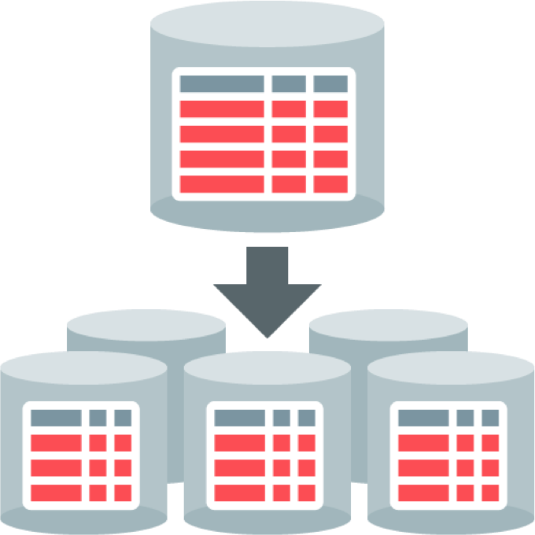

MongDB Sharding¶
Définition¶
C'est une méthode de distribution des données sur plusieurs machines (cluster). Elle permet à MongoDB de passer à l'échelle pour accueillir des bases de données massives avec un débit très important.
Elle fait partie des techniques de mise à l'échelle horizontale : Horizontal scaling.
shard : éclat, tesson (fragment)
Principe de fonctionnement¶
Le cluster est composé de 3 types de serveurs :
- mongos : routeur pour l'acheminement des requêtes.
- Config Server : enregistre les métadonnées sur et la configuration pour le cluster.
- Shard : contient un sous ensemble des données (chunk ou partition) qui peut être déployé comme Replica Set.

La distribution des données sur le cluster est basée sur une clé shard key. La clé peut être un ou plusieurs champs. Elle est utilisée dans l'une des deux stratégies de distribution :
- Hashed Sharding : un hash de clé détermine quelle dans quelle chunk mettre les données.
- Ranged Sharding : la clé est affecté à un chunk selon valeur.
| Hashed Sharding | Ranged Sharding |
|---|---|
 |  |
Mise en place du cluster¶
Le cluster est composé de 2 Config Server, 2 Shard et 1 Config Server
 Lancer les Config Server en Replica Set¶
Lancer les Config Server en Replica Set¶
Configuration des Config Server
storage:
dbPath: C:\data\cs1
journal:
enabled: true
systemLog:
destination: file
logAppend: true
path: C:\logs\logcs1
net:
port: 40001
bindIp: 127.0.0.1
sharding:
clusterRole: configsvr
replication:
replSetName: csrs
storage:
dbPath: C:\data\cs2
journal:
enabled: true
systemLog:
destination: file
logAppend: true
path: C:\logs\logcs2
net:
port: 40002
bindIp: 127.0.0.1
sharding:
clusterRole: configsvr
replication:
replSetName: csrs
- Démarrer les 2 services et initier le Replica Set.
start mongod --config C:\cfg\cs1.conf
start mongod --config C:\cfg\cs2.conf
mongo --port 40001
> rs.initiate()
> rs.add ("localhost:40002")
 Lancer chaque shard en Replica Set¶
Lancer chaque shard en Replica Set¶
- Créer les dossiers : C:\data\sh1, C:\data\sh2
- Préparer les fichiers de configuration
Configuration des Shard Server
storage:
dbPath: C:\data\sh1
journal:
enabled: true
systemLog:
destination: file
logAppend: true
path: C:\logs\logsh1
net:
port: 50001
bindIp: 127.0.0.1
sharding:
clusterRole: shardsvr
replication:
replSetName: shrs1
storage:
dbPath: C:\data\sh2
journal:
enabled: true
systemLog:
destination: file
logAppend: true
path: C:\logs\logsh2
net:
port: 50002
bindIp: 127.0.0.1
sharding:
clusterRole: shardsvr
replication:
replSetName: shrs
- Démarrer les 2 services et initier le Replica Set.
start mongod --config C:\cfg\sh1.conf
start mongod --config C:\cfg\sh2.conf
mongo --port 50001
> rs.initiate()
Puis le deuxième serveur
mongo --port 50002
> rs.initiate()
 Lancer le Routeur¶
Lancer le Routeur¶
- Le fichier de configuration
sharding:
configDB: csrs/localhost:40001,localhost:40002
net:
bindIpAll: true
port: 26000
systemLog:
destination: file
path: D:\logs\logMongos
logAppend: true
- Démarrer et enregistrer les Shard
start mongos --config C:\cfg\mongos.cfg
mongo --port 26000
> sh.addShard("shrs1/127.0.0.1:50001")
> sh.addShard("shrs2/127.0.0.1:50002")
 Distribuer une base de données¶
Distribuer une base de données¶
- Créer une nouvelle base et nouvelle collection. Puis créer un index sur _id.
use testDB;
sh.enableSharding("testDB");
db.createCollection("test");
db.test.createIndex({"_id":1});
sh.shardCollection("testDB.test",{"_id":1});
mongoimport -d testDB -c test --port 26000 restaurants.json
mongo --port 26000 --eval "sh.status()"
Les requêtes sont destinées au routeur.
Inspecter les propriétés et déterminer :
- La clé de sharding
- Le nombre de shunks par shard